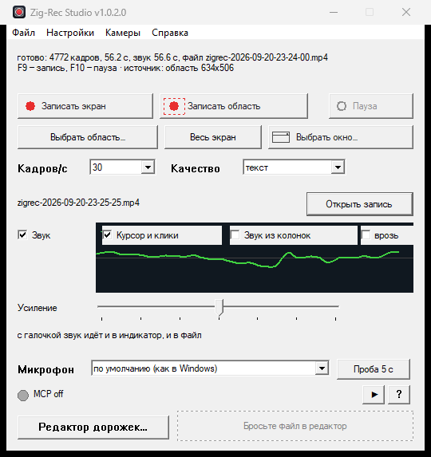

ВозможностиFeatures
Камера как источникCamera as a source
Меню «Камеры»: смотреть камеру в окне или писать в файл.A “Cameras” menu: watch the camera in a window or record it to a file.
Запись в mp4Record to mp4
H.264 через Media Foundation, moov в начале — играется везде.H.264 via Media Foundation, moov at the front — plays everywhere.
РедакторEditor
Таймлайн, резка по ключевым кадрам, метки I-кадров (опция «Вид»).Timeline, cut-by-keyframe, I-frame ticks (a “View” option).
Один exeOne exe
Без установки; двойной клик открывает окно.No install; a double-click opens the window.
Протокол восстановленProtocol reconstructed
Реверс Ivideon: FLV/HTTPS, 2FA, подпись URL.Ivideon reverse-engineered: FLV/HTTPS, 2FA, URL signing.
ДокументацияDocumentation
14 разделов + PDF, открывается из exe.14 sections + a PDF, openable from the exe.
С чего начатьWhere to start
Прочитайте гайд «как написать программу для камеры» — там оба пути: облако (login:pass) и незаконченное прямое подключение. Сборка и запуск — в README-iVideon. Read the “how to build a camera app” guide — it covers both paths: the cloud (login:pass) and the unfinished direct connection. Build and run: README-iVideon.